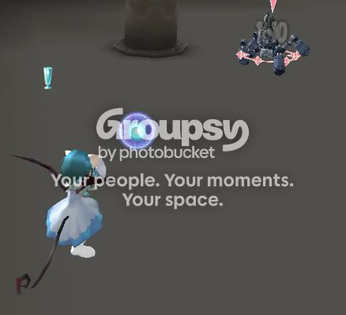

^
^
สาระยาวจิงๆด้วย -*- คุณ 2Tmaster เล่นเอาฮาเลย
เอาละสาระยาวๆ ขอมาก็จัดไปครับ....
ว่าด้วยสกิว E.Barn
สกิวหากินของซอ ได้ตอน Job.43 อัพกันทุกคนครับ ไม่มีใครไม่อัพ โดยมากหลายคนเอาสกิวนี้ก่อนแล้วค่อยไปเปลี่ยนเซจ เพราะเป็นสกิวทำdamage หลักสำหรับทั้ง เก็บเวล และ NvN
ความสามารถสกิวตามที่คุณเจ้าของกระทู้โพสหน้าแรกครับ

Energy burning /JobLv. 43/MxLv.3 ร่ายแล้ว มอนเตอร์จะโดนเดเมจ ครั้งแรก ถ้าไม่ตาย จะเกิดระเบิดเป็นเดเมจอีกครั้ง (ถือเป้นสกิวยิง ที่แรงที่สุดของWizard ในซาก้าปัจจุบัน)
+ การระเบิดในhit2 จะแสดงผลระยะ 3*3 และไม่หาร


อ่านเอาไม่เร้าใจครับ ไปลองกับมอนกันโล้ด!!!
อันนี้นางแบบ(?)ของเราครับ

ขอแยกให้ดู 2 กรณี ครับ มีการใช้ Zen กับไม่ใช้ Zen
1. กรณีแรกไม่ใช้ zen

ยิงตูม มอนไม่ตายใน hit แรก ก็รอ hit 2 ครับ
Damage 420%+200%=620%
2. กรณี 2 มีการใช้ Zen
2.1 ยิงแบบรอการระเบิดใน hit 2
ยิง E.Barn ใส่มอนเดี่ยวๆตัวเดียว Damge hit แรก 3630(ได้ผลจากzen) มอนไม่ตาย Hit ที่สองระเบิดต่อ Damage 1014(ไม่ได้ผลจากzen)
Damage 840%+200%=1040%
2.2 คราวนี้มาดูการยิง E.Barn แบบระเบิด hit 2 ในทันที
ลากมอนมา 2 ตัวครับ แล้วยิง~~~

แบ่งดาเมจที่มอนแต่ละตัวได้รับดังนี้ครับ
1. มอนตัวที่เราเลือก Target โดน hit แรก(3498) + ฮิตหลัง(1744) = 5422 (840%+400%=1240%)
2. มอนรอบข้างโดนเฉพาะ hit 2 ครับ คือ 1744 (400%)
การยิง E.Barn ใส่มอนที่อยู่ติดกันเกิน 1 ตัวในระยะ 3x3 E.Barn จะแสดงผลของ hit ที่ 2 ทันทีครับ จะระเบิดต่อเนื่องเลย ไม่ต้องรอ delay เหมือนกรณีข้างบน
และ สังเกตจากภาพ 2.1ครับ damage hit 2 ถ้าไม่ได้zen จะอยู่ที่ราว 800~1000 แต่ damage ใน hit ที่ 2 ของภาพ 2.2 คือ 1744 แสดงให้เห็นว่า Zen จะมีผลในกรณีที่ยิงแล้วระเบิดต่อเนื่องครับ
ข้อดี
1. ทำdamageขั้นต้นถึง420% มากกว่า E-blast ถึง 20% หากรวมHit2จะมากถึง 620%
2. damage ใน hit2 มีผล3*3 และไม่หารตามมอนเหมือนสกิว E-blast
3. ทำ damage สูงมหาศาลถึง 1240% (ถ้ามีzen และใช้ตรงตามเงื่อนไข-*-)
4. การแสดงผลของhit2 เท่ากับสิ้นสุด Delay ของสกิวนี้ ทำให้เราสามารถก่ะจังหวะร่ายสกิวอื่นต่อได้ง่ายขึ้น
5. damage ใน hit 2 สวยงามอลังการใครเห็นเป็นต้องร้องวู้~~~ (ว่าไมมันเบาวะ!!!)
ข้อเสีย
1. Delay นาน!!!
2.ใช้ mp เปลือง!!!
3. Damage ในhit2 ใช้เวลาระยะหนึ่งจึงแสดงผล หากยิงมอนในระยะใกล้ตัวเกินไปมีเจ็บได้ และหากเลือดเหลือน้อยอาจลงไปนอนวิดพื้นได้เลย
4. Damage ใน hit2 มีระยะสกิวคือ 3*3 หากมอนที่ไม่พึงประสงค์ตัวอื่นอยู่ในระยะแสดงผลก็จะโดนไปด้วย แม้damageจะไม่หาร แต่เราจะโดนมอนไล่ฟัดเพิ่ม -*- มีโอกาสลงไปนอนวิดพื้นได้เหมือนกัน
5. Effect ในhit 2 หากเครื่องอืดช้าเป็นเต่า แล้วยัง(ไม่เจียม)จะเล่น 3 จอ อาจหลุด หรือค้าง ทำให้ถึงแก่ชีวิตได้ -*-
E-barn เป็นเหมือนสกิวดาบ 2 คมนะครับ(เหมือนE.blast นั่นแล) ใช้ๆ ก็ระวังกันหน่อยนะครับ....